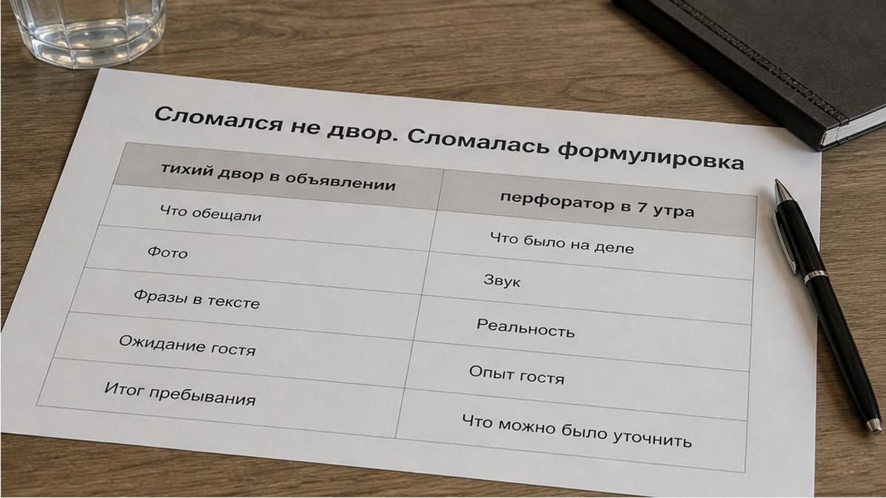
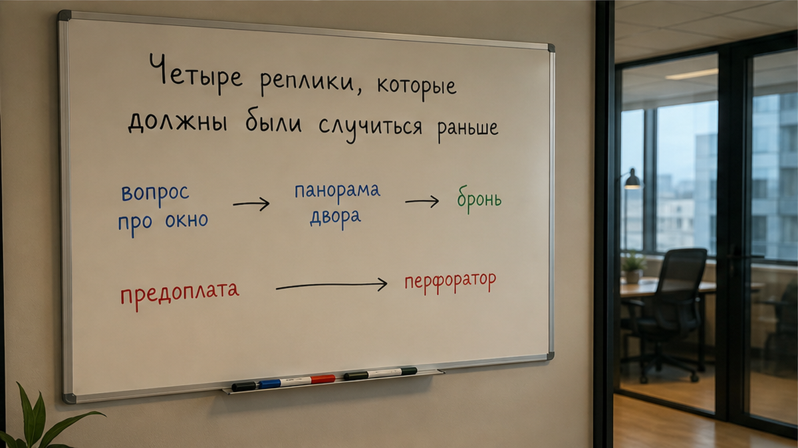
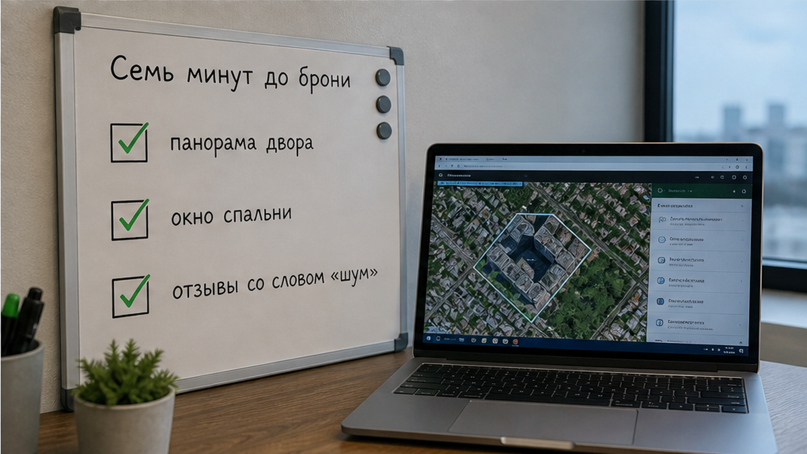

Они бронировали квартиру в Тюмени на 2 ночи и выбрали её не из-за медного чайника на пяти фотографиях кухни. В объявлении было написано: «тихий двор», «центр, тишина». Приехали поздно, вымотанные дорогой, бросили чемодан у двери и легли спать. На рассвете в спальню вошёл перфоратор: не ремонт за стеной, который можно переждать, а стройка прямо во дворе — техника, отбойник, металл по металлу. Потом гости посчитали: за ночь они спали 3 часа. На двоих. В поездке, за которую уже заплачено вперёд.
Утром гость написал хосту: «У вас в объявлении тихий двор. Под окнами стройка». В ответ получил: «Стройка временная, не от нас». Формально фраза честная. Стройка и правда не принадлежит хосту. Двор мог быть тихим, когда снимали фотографии. Но вторую ночь люди провели там же: съезжать вечером некуда, предоплата внесена, свободных вариантов в центре на одну ночь почти нет. Квартира была чистая, кухня — хорошая, чайник — на месте. Только за словом «тихий» оказались две испорченные ночи.
Я хост посуточной в Тюмени. Это «Добрый дом». Telegram · MAX.
Такие истории приходят до брони — «как проверить?» — или после, когда сон уже испорчен. Второй разговор тяжелее.

«Тихий двор» звучит как характеристика квартиры, хотя это впечатление человека, который писал объявление. В одном доме окна на улицу, в другом — на площадку с краном. Адрес один, утро разное.
В выдаче по запросу «квартиры посуточно тюмень», который набирают около 5363 раз в месяц, слова про тишину встречаются десятками. Рядом обычно нет главного: панорамы двора, фотографии именно из окна спальни, понятной фразы о направлении окон. Слово есть, доказательства нет. Это не заговор хостов. Просто дешёвое слово: автору оно ничего не стоит, а гость кладёт на него весь вес своей поездки.
Шум во дворе особенно обманчив: перфоратор в замкнутом дворе бьёт в окно сильнее, чем ремонт за стеной. Три часа сна — это не «немного не выспались», а вся поездка в минус: встреча, прогулка, раздражение друг на друга. Квартира при этом может остаться чистой и с хорошей кухней — удобства не складываются в комфорт, если не выспались.

В этом случае вся переписка уложилась в несколько фраз — но произошла уже после заселения. «Тихий двор» было в объявлении. «Стройка временная, не от нас» — в утреннем чате. Между ними лежали предоплата, чужой город и две ночи, из которых нормально не случилась ни одна.
До перевода денег тот же разговор выглядел бы иначе. Гость мог написать: «Куда выходит окно спальни и что слышно там утром? Есть панорама двора?» Это и есть отмычка. Не «у вас тихо?», потому что на такой вопрос легко получить такое же расплывчатое «да, всё нормально». А вопрос, на который нужен конкретный ответ.
Дальше обычно бывает один из трёх вариантов. Хост присылает панораму и пишет, что окна выходят во двор, рядом нет работ. Или честно говорит: во дворе стройка, вечером спокойно, утром слышна техника. Тогда вы сами решаете, подходит ли вам такой вариант. И есть третий ответ: «Никто не жаловался», «это же центр», «везде что-то строят», «не переживайте».
Это тоже ответ. Полный. Окончательный. Нет, так не бронируем.
Не потому, что хост обязательно хочет обмануть. Он может и правда не знать, что именно происходит у дома каждое утро. Или знать, но не считать это важным. Гостю от этого не легче. Когда ответ на прямой вопрос про сон превращается в туман, риск остаётся у того, кто уже перевёл деньги.

Сначала откройте карты. Не только схему с точкой дома, а спутник и уличную панораму. Ищите не идеальный двор, а следы того, что он сейчас живёт другой жизнью: строительные леса, краны, свежую землю, оранжевые ограждения. Любой из этих признаков — не повод немедленно отказаться от квартиры. Это повод спросить. Если панорама свежая и во дворе уже виден забор, разговор становится предметным.
Потом спросите про окна спальни. Не про район вообще, не про центр и не про атмосферу дома. Именно про окно, возле которого вы будете спать. В центре Тюмени окно на проспект и окно во двор — это две разные квартиры по одному адресу. На проспекте работает транспорт. Во дворе при активной стройке рано просыпается техника. Идеального варианта может не быть, но осознанный выбор всё равно лучше красивого сюрприза после заселения.
Ещё одна полезная вещь — свежие отзывы. Не общие «всё супер», а детали, где люди пишут про шум, окна, подъезд, двор и утро. Мы уже разбирали, как красивая оценка способна ничего не сказать о реальном опыте, на примере рейтинга 4,8 из двух одинаковых отзывов. Механика та же: цифра выглядит убедительно, пока не начинаешь читать, что именно за ней стоит.
С расстояниями похожая история: в объявлении пишут «рядом с вузом», а на картах — три остановки.
Вы перед бронью открываете панораму двора или всё ещё верите слову «тихий»? Ответьте честно в Telegram или MAX — мне интересно, где для вас проходит граница между нормальной проверкой и лишней тревогой.
Главная подмена в таких историях простая: человек выбирает описание и метку на карте, а ночевать потом приходится у конкретного окна. Не «тихий двор» в объявлении. Не «центр» в адресе. А то, что слышно из спальни утром.
«Тихий двор» нельзя нормально проверить, потому что это оценка. «Центр» тоже расплывается: для одного это пять минут пешком, для другого — три остановки. А вот фразу «окна спальни выходят во двор, рядом идут работы, утром слышна техника» проверить можно. Панорамой. Свежими отзывами. Прямым ответом хоста. Если подтверждения нет, это уже информация, а не повод уговаривать себя.
С кухней работает та же логика. В объявлении она может быть отмечена галочкой, но на практике не решать вашу задачу — особенно если вы бронируете жильё на несколько ночей и рассчитываете не ходить в кафе каждый день. Об этом есть отдельная история: «кухня есть» — и три ночи в кафе. Красивое наличие вещи и её реальная польза — не одно и то же.
Вот мораль этого случая. Сначала проверка, потом перевод. Не наоборот.
Порядок здесь важнее списка действий. Панорама, открытая после предоплаты, уже не защищает вас от шума. Это вскрытие причины, почему вы не спали. Пока деньги не ушли, у вас есть выбор, возможность сравнить варианты и спокойно задать неудобный вопрос. После перевода остаётся чат, где вам объясняют, что стройка временная и не зависит от хоста.
Я не буду говорить, что все квартиры «Доброго дома» стоят в вакууме. Это была бы та же дешёвая фраза, только с другой стороны. Город живой: где-то строят, где-то ремонтируют, где-то меняется двор. Наша задача как хоста — не прятать это за общими словами и отвечать до брони.
Если выбираете конкретную квартиру, спросите, куда выходят окна спальни, какие там стеклопакеты, что сейчас происходит во дворе и рядом. Если во дворе идут работы, вам должны сказать, что они идут, а не надеяться, что вы не заметите. Иногда правильный ответ — предложить другой вариант.
Комфорт ночи потом тянет за собой всю поездку: настроение, силы, планы и даже день выезда. Когда поезд позже выселения, разбитому человеку особенно не хочется сидеть с чемоданом и искать, куда себя деть. Про этот промежуток мы писали отдельно: выезд в 12:00, поезд в 16:30.
Объявление — витрина, а бронируете вы сон. Витрину снимают в тихий день, двор живёт с краном и отбойником. Семь минут на карты и один прямой вопрос — и вы выбираете не по обещанию, а по тому, с чем проснётесь утром.
Напишите до брони — уточним, куда выходят окна и что сейчас во дворе. Telegram: t.me/Dobriy_dom_72
MAX: max.ru/id660300569233_biz
Сайт: добрыйдом-72.рф
Бронирование: добрыйдом-72.рф/booking
Телефон: +7 (993) 574-83-22
Менеджер: t.me/Dobriy_dom_Tyumen